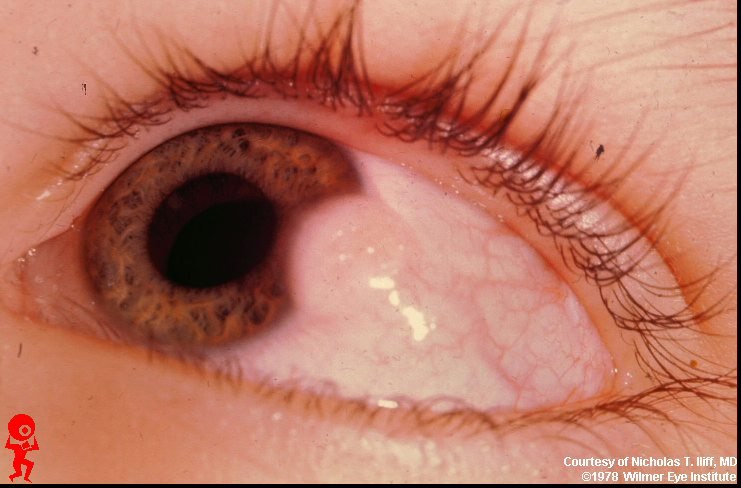

Dermoid
* Định nghĩa:
+ U bì, nang dạng bì.
* Lâm sàng:
+ U bì hay u nang bì xuất hiện từ khì mới sinh đến tuổi thiếu niên và tiến triển chậm, trừ phi u bì vỡ. Loại u này có thể phát triển vào hốc mắt (đặc biệt ở vị trí thái dương trên) hoặc ra ngoài hốc mắt ở mi trên phía thái dương hoặc cung mày.
+ Khi u bì phát triển ra ngoài thì nó là một khối trơn lán, tròn, không đau. CT scan cho thấy một tổn thương bờ rõ, ôm sát vào thành xương hốc mắt. MRI có cản quang: là một khối rõ ràng, T1w: đậm độ giảm so với tổ chức mỡ hốc mắt, bao u bì có tương phản rõ ràng. T2w: đậm độ ngang bằng/thấp so với mỡ hốc mắt, có thể thấy mỡ/dịch trong khối u. Siêu âm B: tổn thương dạng nang với hồi âm rõ.
* Điều trị:
Phẫu thuật cắt bỏ hoàn toàn khối u với toàn bộ bao. Nếu nang bì bị vỡ, chất trong nang có thể gây phản ứng viêm cấp. Lấy sót bao u nang bì, có thể gây tái phát.
* Hình ảnh:

Hình: U bì vùng rìa
Hình: U bì dưới da mi trên ngoài
(Trích từ http://www.redatlas.com)